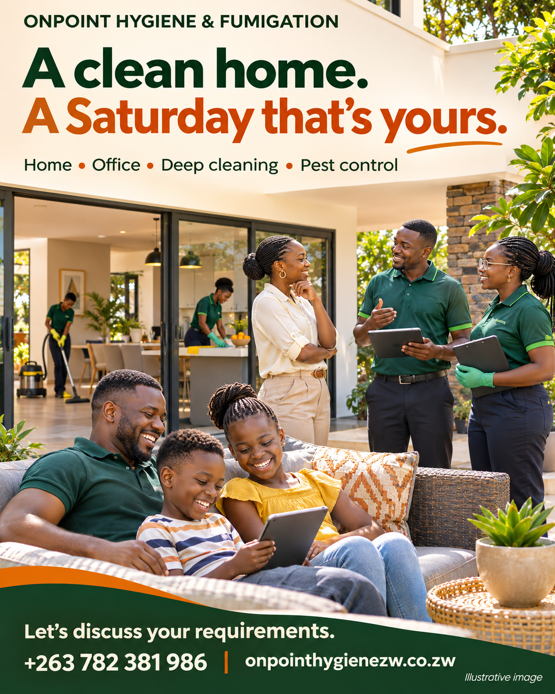
Day 01
A clean home. A Saturday that’s yours.
30 daily posters. Click any image for its full-resolution original. Models and scenes are illustrative.

A clean home. A Saturday that’s yours.
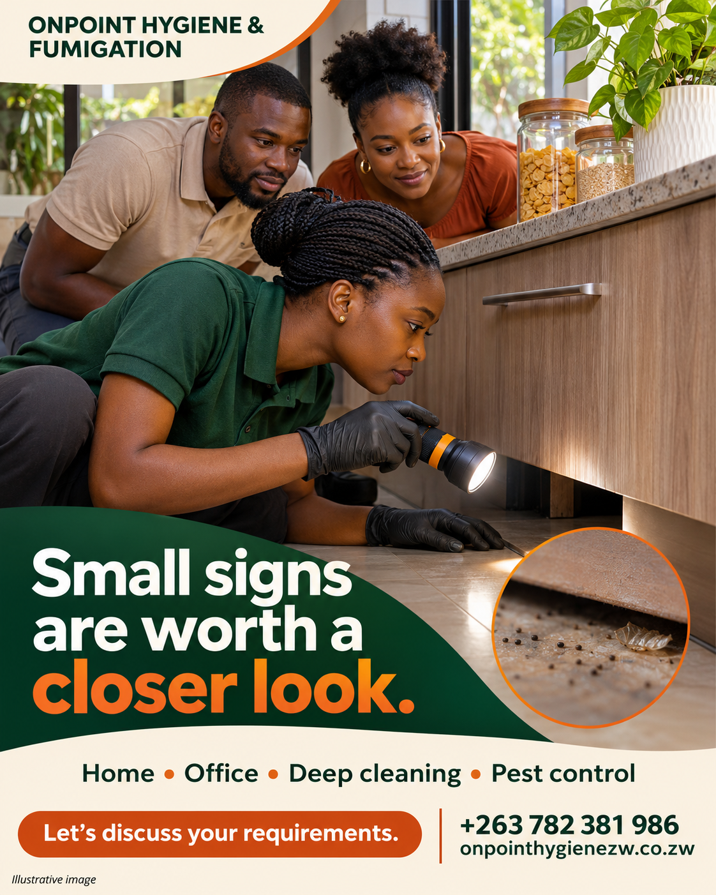
Small signs are worth a closer look.
It starts with understanding your space.
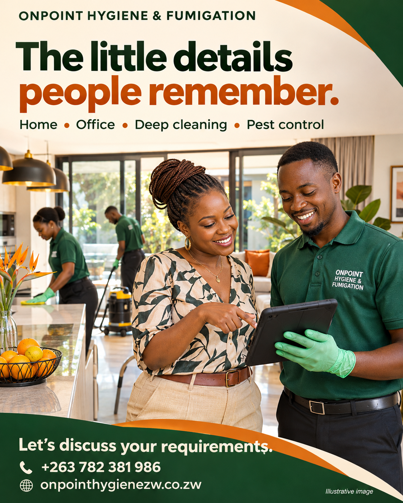
The little details people remember.
A fresh start for your working day.
Make room for a slower Saturday.
Before treatment, ask the right questions.
A kitchen ready for its next chapter.
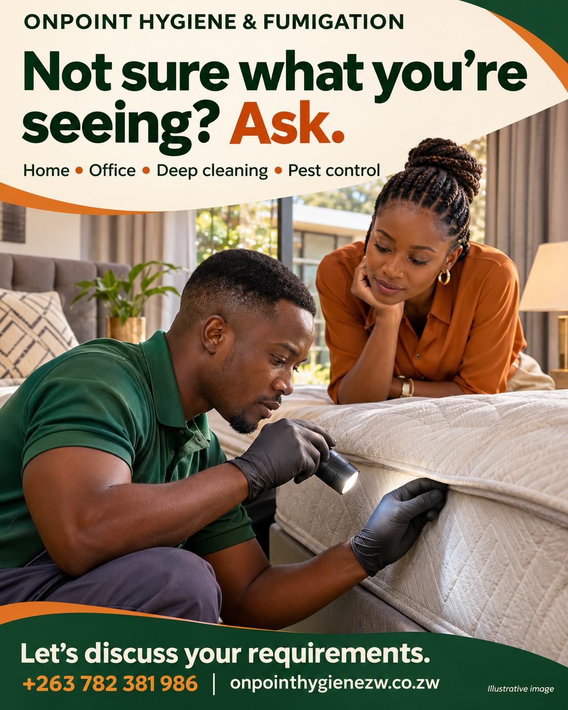
Not sure what you’re seeing? Ask.
Good cleaning starts with a plan.
A better routine for a busy office.
Which room would you start with?
A fresh start behind the fridge door.
Look beyond what you can see.
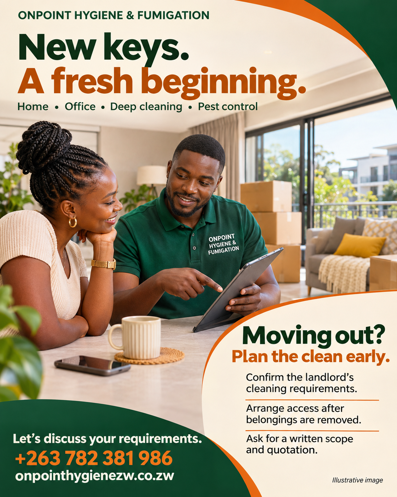
New keys. A fresh beginning.
A sound in the ceiling? Let’s talk.
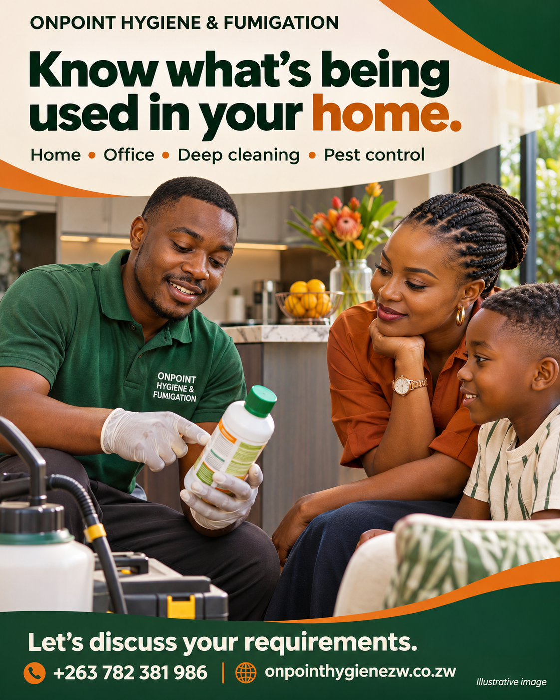
Know what’s being used in your home.
Know what happens next.
Know a business that could use a hand?
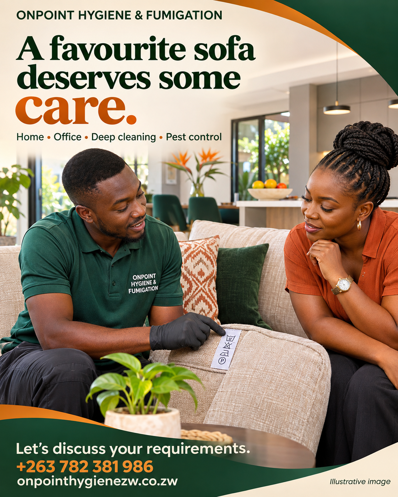
A favourite sofa deserves some care.
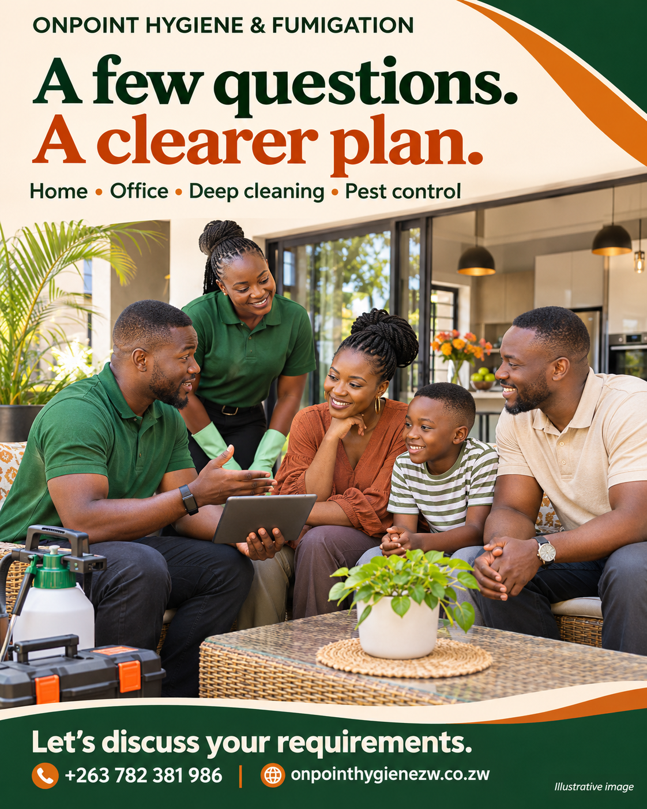
A few questions. A clearer plan.
Big spaces need a thoughtful approach.
Prepare your home for the rains.
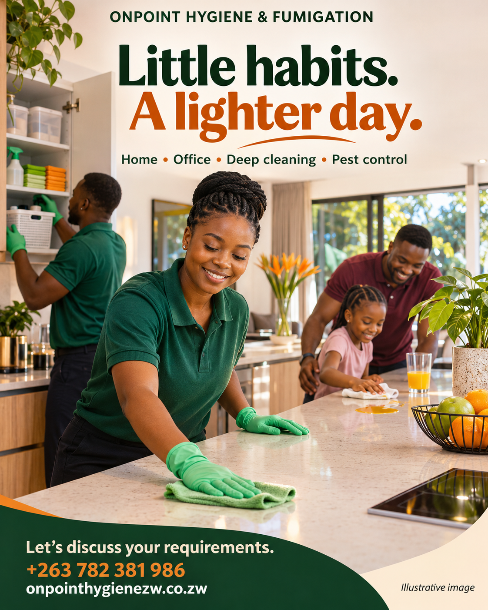
Little habits. A lighter day.
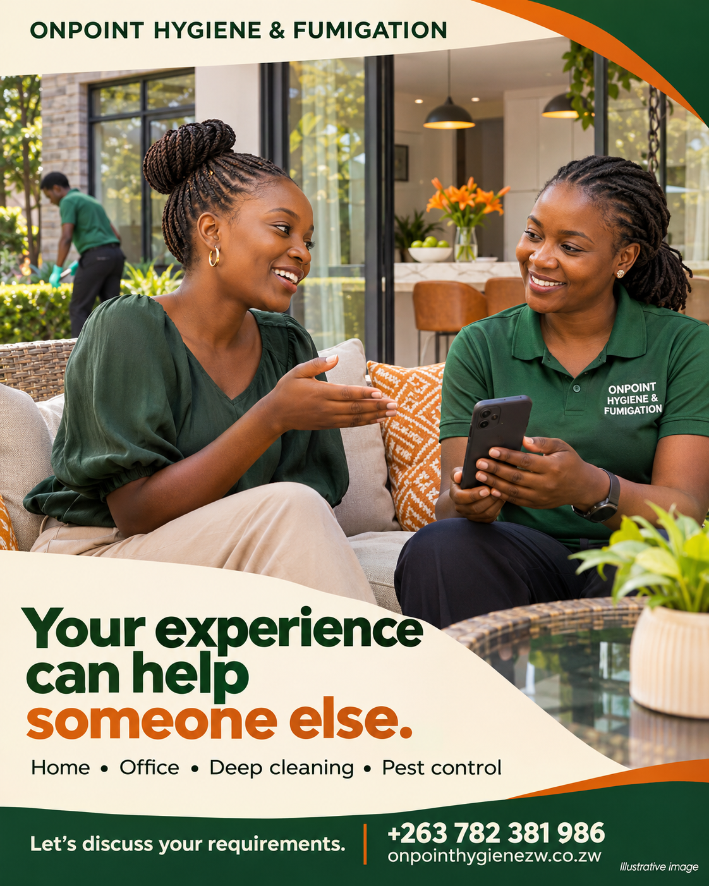
Your experience can help someone else.
Tell us what needs a fresh start.
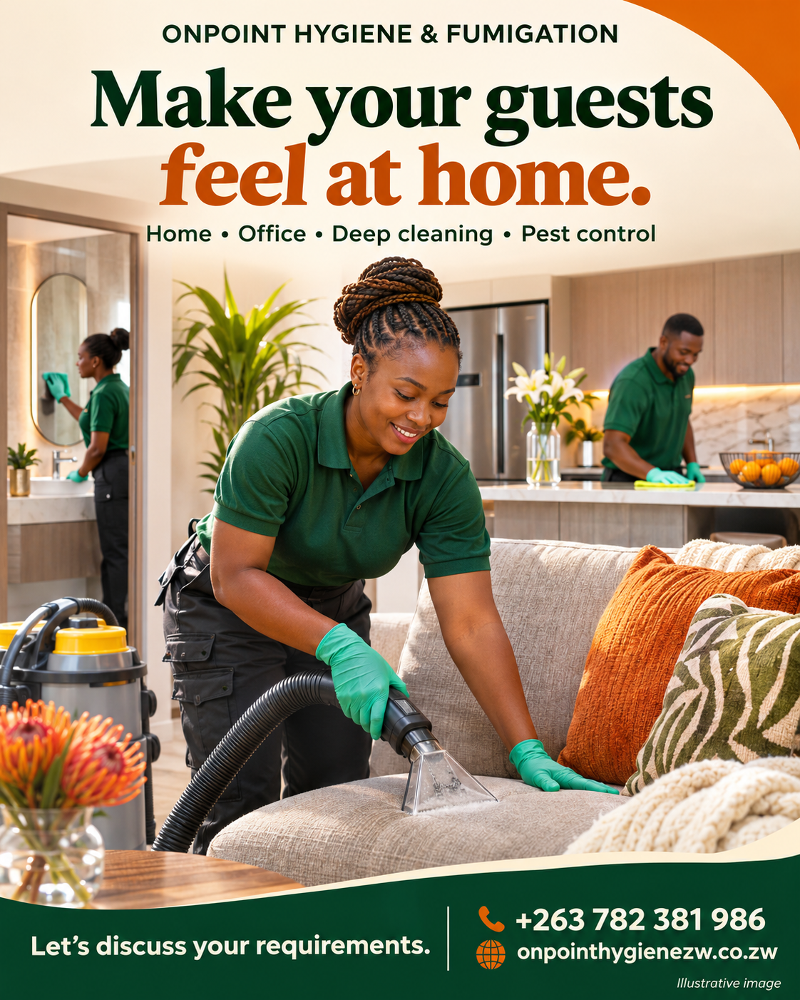
Make your guests feel at home.
A plan that fits your space.
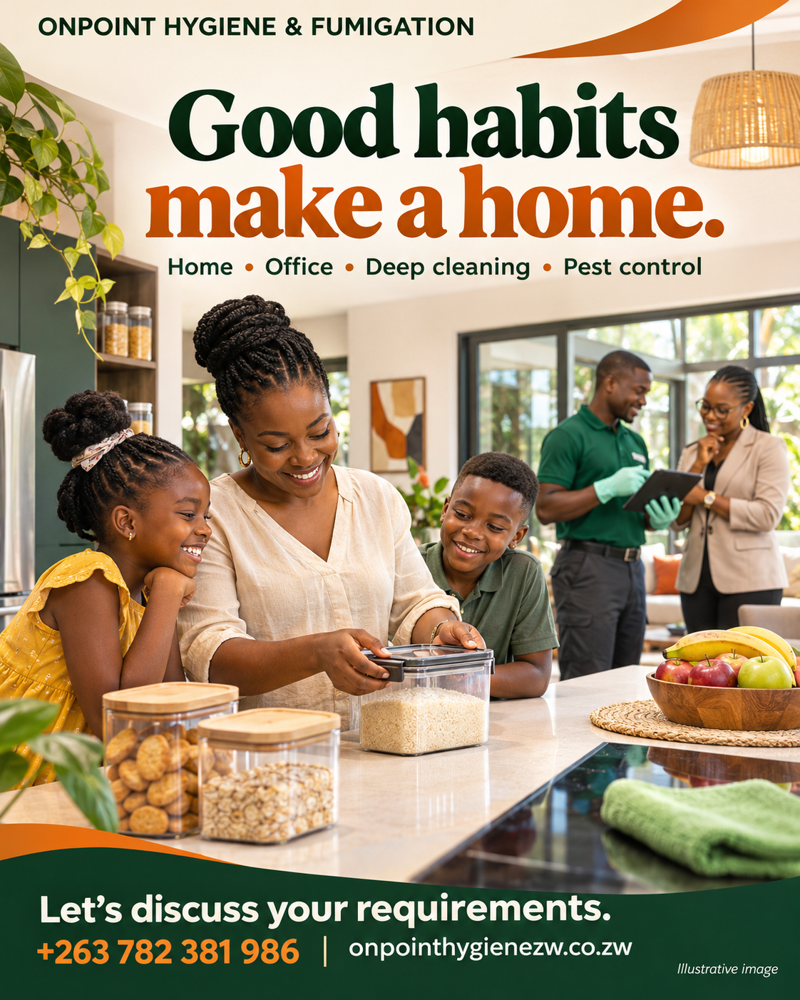
Good habits make a home.
Let’s take the next clean off your list.